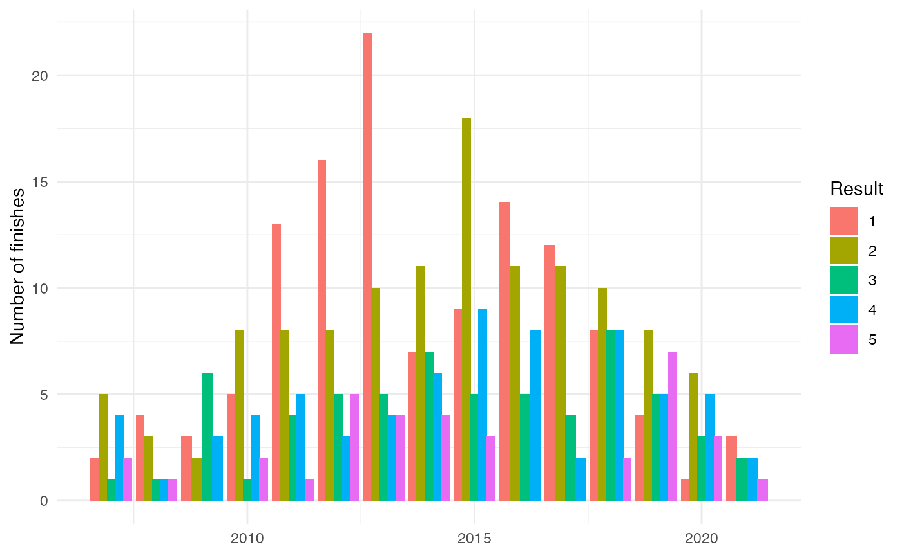

results_finished <- sagan_results %>%
# Final placement in grand tour points classifications is included in
# the results data, so we filter them out first. We can also filter out
# the races that Sagan entered but did not finish
filter(!str_detect(stage, "classification"),
result < 200)
# Completed races
(races_finished <- nrow(results_finished))## [1] 890## [1] 483## [1] 123Since 2007, Peter Sagan has finished 890 races in total. Among those 890 races, he has placed in the top ten 483 times, and has an incredible 123 wins to his name, giving him a historical winning percentage of 10%.
There’s little doubt that Peter Sagan is among the most winningest cyclists in history. Here’s a visualization exploring Sagan’s career arc; showing the frequency of races that he’s finished in the top five by year. It’s worth noting that at the time of writing, Sagan is still winning grand tour stages and the 2021 season is far from over.
results_finished %>%
dplyr::filter(result <= 5) %>%
group_by(year = year(date), result) %>%
summarise(n = n()) %>%
mutate(result = factor(result, levels = c(1:5))) %>%
ggplot() +
geom_bar(aes(x = year,
fill = result, y = n),
stat = "identity", position = "dodge") +
theme_minimal() +
labs(y = "Number of finishes",
fill = "Result") +
theme(axis.title.x = element_blank())